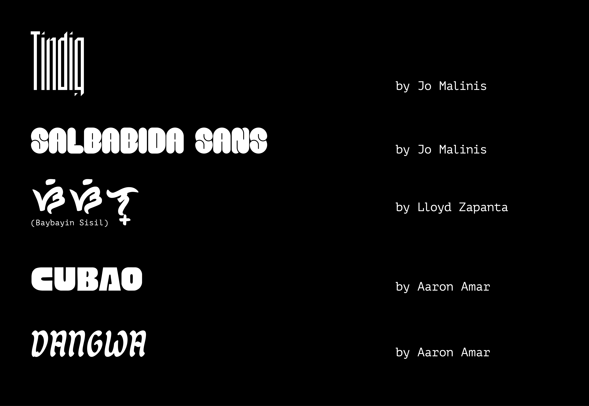

Contact
"Para!" is a series of three posters inspired by the works of three Filipino graphic designers. I chose the to use the jeepney, a cultural icon of the Philippines, as a canvas to pay homage to these designers as well as our home country.
Website: gianwong.com
Insta: @giancarlowong
Biography: Gian is a type-focused designer & illustrator living in the sunny capital of the Philippines. He loves working on expressive lettering and colors that pack a punch.
I love Wong's bright, super-saturated palettes and thought that they perfectly suited the style of the classic jeepney with their loudness, boldness, and brightness. Wong's work was what inspired me to start this project in the first place because his bold typography reminded me so much of the type I saw on jeepneys as a kid. I named his jeepney "maldita", which means bratty woman in tagalog, because I wanted it to have an attitude.

Website: jomalinis.com
Insta: @aniciaclean
Biography: Jo Malinis is a graphic designer from the Philippines. Apart from working on brand identities, she is also fascinated by letterforms and how they can be representative of concepts and themes that inspire her personal and professional work.
Malinis is a designer's designer and her passion for what she does is infectious. I sat in on one of her lectures during TypeWknd 2021 and was fascinated by her curiousity for typography. She runs Type63, an initiative that showcases type design and typography by Filipinos. Two of the fonts I used were actually made by her! Malinis's last name is a tagalog word that means "clean", and who doesn't want to ride in a clean jeepney?

Website: cynthiabauzonarre.com
Insta: @arncyn
Biography: Cynthia Bauzon-Arre is a freelance illustrator + graphic designer specializing in print projects that celebrate Philippine culture and advocate nature appreciation and conservation.
Bauzon's work is lovely, delicate and inspired by fauna and flora. I was initially at a loss for how to relate it back to jeepneys until I discovered the electric jeepney, saver of carbon emissions. Inspired by Bauzon-Arre's work to bring awareness to the native culture, I included baybayin text on her jeepney, which I dubbed "Diwata", after the tagalog word for nature spirit. Baybayin is a pre-colonial script mainly used in the northern region of the Philippines that has been experiencing a resurgence in recent years.

All of the typefaces I used were made by Filipino designers with the exception of PT Mono. If you're curious about any, I've provided a list of their names below.
